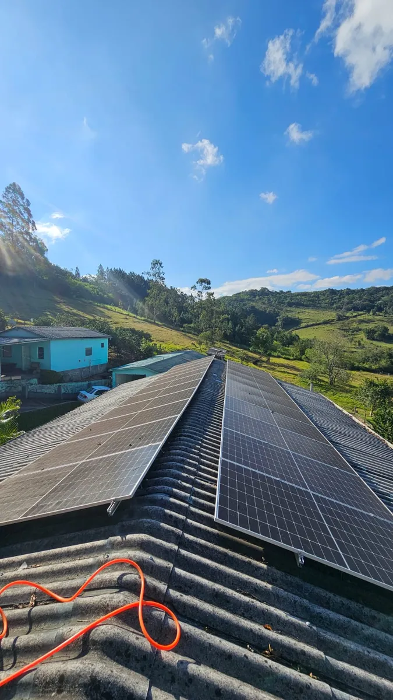
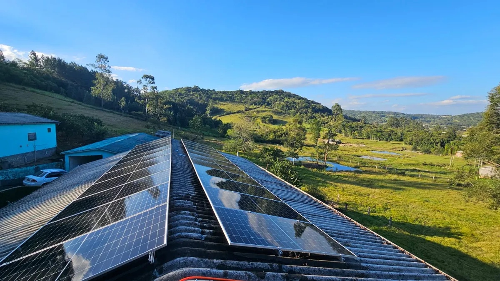

Poeira, fuligem e excrementos reduzem drasticamente a captação. A SNDLimp resolve isso.
A perda varia com o porte da instalação, a tarifa local e o regime de sujeira. Solicite uma avaliação técnica.


Usamos equipamento profissional, produtos biodegradáveis e técnica que não risca, não mancha e não danifica o vidro antirreflexo dos seus módulos. Limpeza feita por quem entende de geração.
Resultado: eficiência restaurada para o valor nominal do módulo, mensurável logo após a limpeza.
Nada de esponjas ásperas ou produtos caseiros. Cuidamos do seu investimento.
Antes e depois para você ter certeza do serviço.
Em poucas horas seu sistema volta a produzir no máximo.